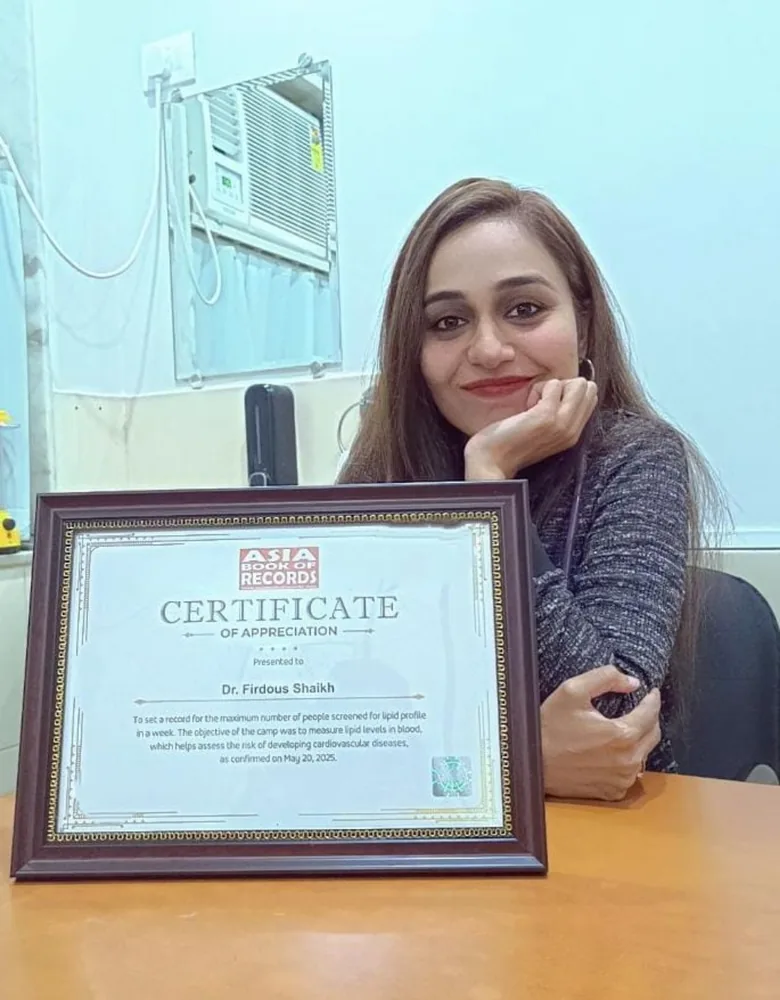

About Dr. Firdous Shaikh

Dr. Firdous Shaikh trained in medicine at Zhejiang University School of Medicine in China, completed an internship there in 2012, and cleared the Foreign Medical Graduate Examination in India on the first attempt. Early years back home were in emergency medicine as a Chief Medical Officer at Lady Hardinge Medical College in Delhi. Emergency work instils rapid clinical decision-making and clear communication, principles that continue to guide daily clinical practice.
Diabetes drew Dr. Shaikh's interest because it is a condition where a physician can create progressive, tangible improvements in a patient's health. Dr. Shaikh completed Diabetology training at the Asian Heart Institute in Mumbai, working in the Department of Diabetology and Endocrinology with a focus on perioperative diabetes care—maintaining glycaemic stability surrounding surgical interventions. Dr. Shaikh went on to earn a postgraduate qualification in Clinical Endocrinology and Diabetes from the Royal College of Physicians (UK).
From 2020 to 2022, Dr. Shaikh served as Consultant Diabetologist at the BKC dedicated COVID Health Centre in Mumbai, managing over 500 patients with diabetes concurrently. Dr. Shaikh designed and implemented a real-time glucose charting workflow on Google Sheets that allowed the multidisciplinary clinical team to identify immediately which patients required urgent medication titration. Dr. Shaikh was felicitated by the Mayor of Mumbai for this frontline service.
Since then, Dr. Shaikh has practised across outpatient clinics and community settings in Mumbai, organised diabetes screening camps for school students, Mumbai police personnel and underserved groups, and pursued advanced clinical education. In 2024, Dr. Shaikh completed a Certificate Course in Clinical Diabetology and Obesity with Harvard Medical School and an advanced clinical diabetes programme with Emory University School of Medicine.
Alongside patient consultations, Dr. Shaikh actively conducts clinical research and medical writing. Dr. Shaikh's academic work has been presented at ATTD, the American Diabetes Association Scientific Sessions and national conferences in India, and Dr. Shaikh has co-authored published research on diabetes distress in Indian patients, as well as two educational books.
What Dr. Shaikh cares about most
- The emotional side of diabetes. Diabetes distress is real and under-treated. Dr. Shaikh is a co-author of published research on developing a Modified Diabetes Distress Scale for India, and serves on the Diabetes India Mental Health Group.
- Women and diabetes. Dr. Shaikh founded the DAWN Foundation (Diabetes and Women's Network) because women often come last in their own family's health priorities. Learn more about the DAWN Foundation.
- Access. Dr. Shaikh is a strategic partner of T1International, a patient-led organisation working for affordable insulin and supplies, and an advisory board member for diabetes organisations in Africa.
Timeline
-
2012MBBS, Zhejiang University School of Medicine, China
-
2013 to 2014Chief Medical Officer, Emergency Medicine, Lady Hardinge Medical College, Delhi
-
2015CPS Diabetology, Asian Heart Institute, Mumbai
-
2016 to 2017Postgraduate Resident, Diabetology and Endocrinology, Asian Heart Institute
-
2017 to 2018Associate Consultant Diabetologist, Lina Diabetes Care Centre, Mumbai
-
2019Postgraduate qualification in Clinical Endocrinology and Diabetes, Royal College of Physicians (UK)
-
2020 to 2022Consultant Diabetologist, BKC COVID Health Centre
-
2020Co-founder, A Sweet Life Diabetes Care and Research Foundation
-
2024Harvard Medical School certificate course; Emory School of Medicine advanced course
-
2025Founded the DAWN Foundation
Memberships and Registrations
RSSDI (Membership No. 8568), American College of Physicians, American Diabetes Association, ISPAD, Indian Medical Association (Life Member), Lipid Association of India (Honorary Member), Maharashtra Medical Council Reg. No. 2015030842.
Recognition

- 11th Annual Women Summit Awards, NSE Mumbai, May 2026
- Outstanding Contribution in Women's Health Award, American College of Physicians India Chapter, Sept 2025
- Recorded in the Asia Book of Records for the largest number of people screened for lipid profile, May 2025
- ATTD Breakthrough Outcomes Award, Amsterdam, March 2025
- Excellence in Medical Care and Awareness Award, Diabetes India, Feb 2025
- Fellowships: Diabetes India (2025), Indian Society of Chrono Medicine (2024)
- ACP India Women Educator Award, Aug 2024
- Hello Diabetes D-NextGen Award, Compassionate D-Education, Jan 2024
- Felicitated by the Mayor of Mumbai for COVID-19 duty, Oct 2020
Have a question about your reports or treatment plan?
Whether you are dealing with new-onset diabetes, persistent thyroid symptoms, or weight concerns, consultations are thorough and focused on clear explanations.
Book a consultation